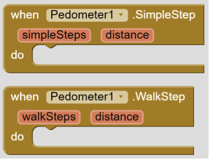

Pedometer Component Simplifies Accelerometer Sensor Data

This is a guest blog post by MIT App Inventor Master Trainer Rich Interdonato.
An online App Inventor course is now being offered by the Department of Health Promotion and Education at the University of Utah. Like David Wolber's course at UCSF, it counts as an undergraduate Math credit and may owe some of its popularity to the fact that it provides an immediate way for students to program their smartphones to address core problems in their various majors. For students in the College of Health, one of these problems is measuring physical activity.
Pedometers are all the rage today. As people have become ever more interested in "bio-hacking" and collecting "quantified self" data, it seems only natural that measuring physical activity should be of increasing interest too. In fact, there are a number of companies out there that make wearable devices dedicated to counting your steps for you. The interest in tracking steps and the wide variety of step counting devices is related to the importance of figuring out how much energy a person expends each day - and ultimately, how much food they should be eating.
As you can probably imagine, there are a lot of steps required (pun intended) to turn raw motion sensor data into the proper amount of food on someone's plate. Even detecting a single step requires making numerous calculations and assumptions, and this can be quite challenging for App Inventors. Therefore, my intent with this blog post is to review how the current AccelerometerSensor component reports motion data so that you can better appreciate how wonderful the new Pedometer Component really is. By providing the SimpleStep and WalkStep events, the new Pedometer Component does the “heavy lifting” of step detection for us and makes the creation of simple activity tracking apps possible for everyone.
AccelerometerSensor Data and Real World Motion
It seems to me that much of the challenge faced by students making their own step counters stems from the fact that until now, they had to use the AccelerometerSensor to detect steps, and that is just plain hard to do well. In fact, simply understanding how the AccelerometerSensor data relates to forces in the real world is a bit challenging conceptually, and this understanding is essential to making pedometers that work.

Modern accelerometer sensors measure forces in three directions, or “along three axes”. Each axis of measurement, called X, Y, and Z, represent an imaginary line along which the sensor can detect acceleration. The images above show that each axis has a fixed orientation relative to the accelerometer sensor within the device. Because the axes are fixed in relation to the device hardware, we know that when there is a positive change in acceleration along the Y axis, the device is moving in whatever direction its TOP is pointing. When there is a negative change in the Y axis acceleration, then the device is moving in whatever direction its BOTTOM is pointing. Similarly, when a negative acceleration is detected along the X axis, the device is moving in whatever direction its LEFT side is pointing, and when there is a positive Z axis acceleration, the device is moving in whatever direction its FRONT is facing.
Almost always, the accelerometer sensor is reporting some combination of X, Y, and Z acceleration values, even when the device is not actually moving. You see, the force of gravity (9.8 m/s/s) is always acting on earthly objects and it is detected as an acceleration. In fact, it is only when the device is falling freely that the X, Y, and Z will simultaneously report (nearly) 0 acceleration. Otherwise, the force of gravity will always be included in the reported acceleration measurements, and because the force of gravity always acts along an imaginary line that runs between the device and the center of the Earth, it is possible to figure out how the device is positioned in space.
To put this in terms of real objects, consider a device that is placed on a wheeled cart such that its FRONT is facing perfectly up and its BOTTOM RIGHT corner is pointing exactly in the direction that the cart will roll when it is pushed. At rest, the Z acceleration will be about 9.8 m/s/s because the device detects the force of gravity, and it is in-line with its Z axis. The X and Y axes do not detect any acceleration at this time because they are perpendicular to the force of gravity and the table is not moving. However, once the table is pushed, notice how the acceleration values change. The Z acceleration remains the same because gravity continues to act on the device as before. However, since the Y axis points in a somewhat opposite direction from the rolling cart, it will report a negative acceleration value, and since the X axis is pointed somewhat in-line with the rolling cart, it will report a positive acceleration. Based on the values obtained from the accelerometer, it is possible to determine not only how the device is accelerating, but also how it is positioned. That is until the cart comes to a sudden stop and the device slides off and starts to fall. Then the X, Y, and Z accelerations all become 0 and we are out of luck.
Counting Steps in App Inventor
You might guess that the process of decoding the AccelerometerSensor.AccelerationChanged event parameters into "real" steps is no a trivial matter – and you would be right. In fact, it offers an example of an ongoing technical challenge that is open to much innovation and debate, even at the professional level. If you have ever "fooled" a pedometer with non-walking motion, then you have demonstrated just how difficult this problem is, and why App Inventor's new Pedometer Component is so handy.

To greatly simplify things, the new Pedometer Component provides two events; SimpleStep and WalkStep. The difference between the two is that the WalkStep event is only triggered when a SimpleStep appears to be associated with forward motion. For activity tracking apps, this is an important, and maybe critical distinction. What is more, the events return not only the number of steps detected since the Pedometer Component was started, but also the distance travelled by the walker, based on the StrideLength property that can be set for the component.
Even with the "heavy lifting" of step detection that is provided by the new Pedometer Component, there are still plenty of other "problems" to solve when making your own step counting apps. For example, accurately setting the stride length is an interesting problem that you might decide to tackle in you next App Inventing session. Perhaps you might have your users walk some known distance and then figure out how many steps they took to do so, allowing you to compute a more accurate StrideLength. Maybe you might like to use the GPS on the device and actually measure the distance travelled by the walker as part of a "calibration routine". Maybe you will think that the StrideLength should be dynamically adjusted as a person uses the app over time, such that the app "learns" what the correct average value should be? As you can see, when it comes to accurately measuring human activity, there are plenty of technical challenges. Fortunately, App Inventor's new Pedometer Component takes care of much of the burden of step counting for us. Thank you M.I.T.!